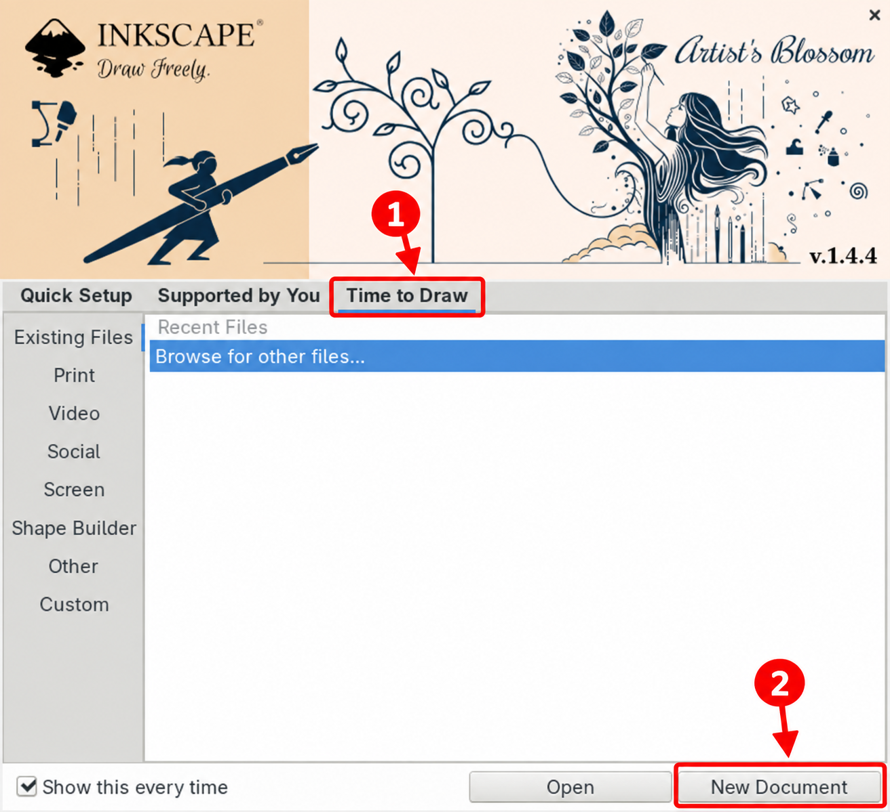
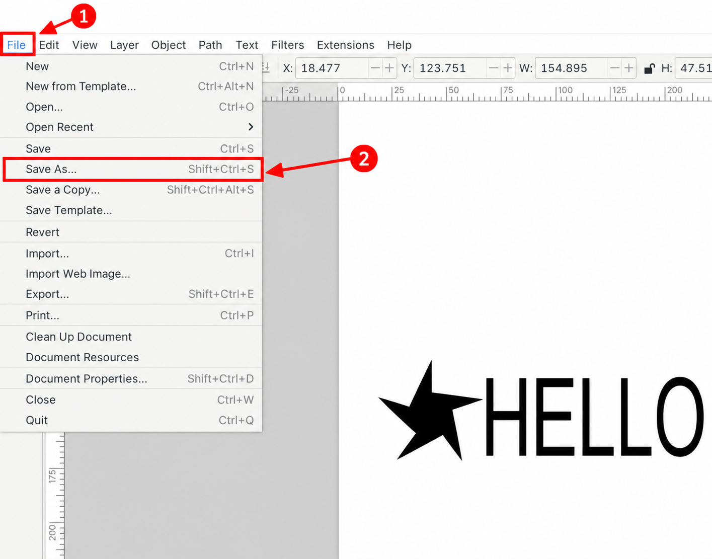
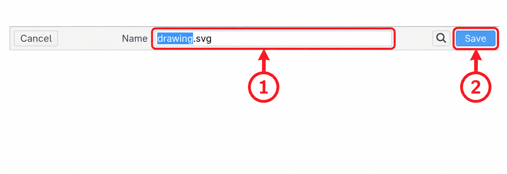
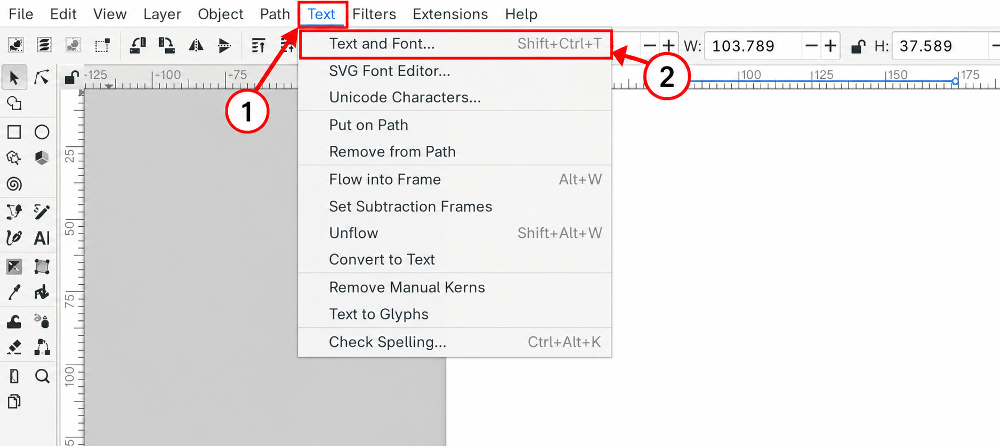
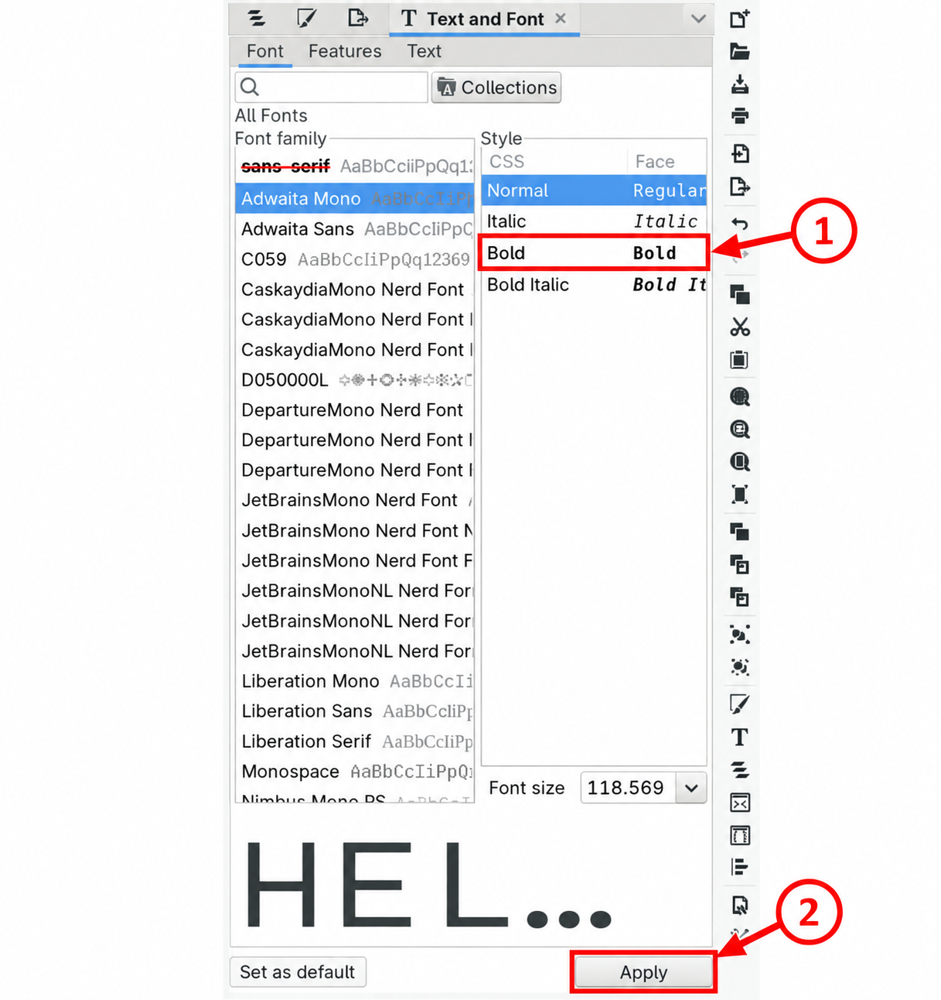

Búðu til eitt tákn og eitt orð í Inkscape.
Lógóið þitt verður á lokinu á kassa.
Lokið með lógóinu verður þrívíddarprentað í öðrum áfanga.
Þetta er einstaklingsverkefni. Taktu eitt skref í einu. Þú mátt biðja um hjálp ef þú festist.
Dæmi:
★ HELLO
Í upphafsglugganum: smelltu á 1 · Time to Draw og síðan 2 · New Document.
Ef þú ert þegar með autt blað geturðu haldið áfram.

1 · Stjarna: Smelltu á stjörnuverkfærið. Dragðu á blaðinu til að teikna stjörnu.
2 · Texti: Smelltu á A. Smelltu á auðan stað á blaðinu. Skrifaðu HELLO eða þitt eigið orð.
3 · Ör: Smelltu á örina. Dragðu orðið við hliðina á stjörnunni.
Smelltu á 1 · File og síðan 2 · Save As.

Í reit 1: nefndu skrána logo.svg.
Smelltu síðan á 2 · Save.

Smelltu á A og síðan á orðið þitt.
Smelltu á 1 · Text og síðan 2 · Text and Font.

Smelltu á 1 · Bold og síðan 2 · Apply.

Lestu orðið þitt á skjánum. Eru allir stafirnir skýrir?
Vistaðu með Ctrl+S.
Veldu File → Save As. Vistaðu afrit sem logo-3d.svg.
Smelltu á örina efst til vinstri. Ýttu á Ctrl+A til að velja allt.
Veldu Path → Object to Path. Þá verða stafirnir að formum.
Vistaðu með Ctrl+S. Opnaðu afritið aftur og athugaðu að lógóið sjáist rétt.
Skilaðu logo.svg í Canvas.
Ef þú gerðir afritið skaltu líka skila logo-3d.svg.
Skilaðu því sem þú náðir að gera.